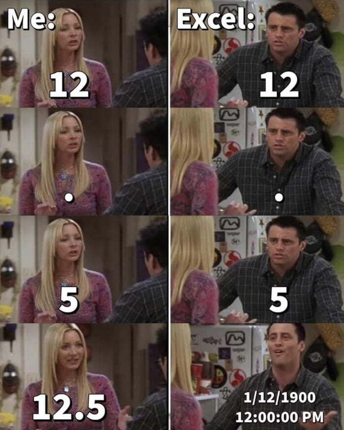

function (file, col_names = TRUE, col_types = NULL, col_select = NULL,
id = NULL, locale = default_locale(), na = c("", "NA"), quoted_na = TRUE,
quote = "\"", comment = "", trim_ws = TRUE, skip = 0, n_max = Inf,
guess_max = min(1000, n_max), name_repair = "unique", num_threads = readr_threads(),
progress = show_progress(), show_col_types = should_show_types(),
skip_empty_rows = TRUE, lazy = should_read_lazy())
NULLR: {readr} y {tidyr}
Dr. Francisco Zambrano
{readr}:
Leer datos de texto rectangulares
{readr}: r datos de texto rectangulares
{readr} proporciona funciones de lectura y escritura para multiples formatos de archivo:
- read_delim(): archivos de delimitacion general
- read_csv(): archivos separados por coma (,)
- read_csv2(): idem pero separados por punto y coma (;)
- read_tsv(): archivos separados por tabulación
- read_fwf(): archivos de ancho fijo
- read_table(): archivos separados por espacios en blanco
- read_log(): archivos web log
Convenientemente, las funciones write_*() funcionan de forma analógica. Además, utilice el paquete {readxl} para archivos de Excel, el paquete {haven} para archivos Stata, el paquete {googlesheets4} para Google Sheets o el paquete {rvest} para archivos HTML.
{readr}: r datos de texto rectangulares
Probémoslo leyendo los datos de los pingüinos.
Con el propósito de ilustrar el {readr}, los datos penguins se escriben en un archivo csv a priori usando write_csv(penguins, file = "./data/penguins.csv").
Nota: Al r con alguna función read_*() devuelve un objeto de tipo tbl_df(tibble).
{readr}: Leer datos de texto rectangulares
{readr} imprime las especificaciones de la columna después de la importación. De forma predeterminada, intenta inferir el tipo de columna (por ejemplo, int, dbl, chr, fct, date, lgl) de las primeras 1000 filas y analiza las columnas en consecuencia.
¡Intente hacer explícitas las especificaciones de las columnas! Es probable que se familiarice más con sus datos y vea advertencias si algo cambia inesperadamente.
Analizar solo las primeras 1000 filas es eficiente, pero puede dar lugar a conjeturas erróneas:
Nota: Encuentre más información de {readr} en el cheat sheet.
{readr}: Leer datos de texto rectangulares
Eventualmente, querrá dejar de usar los archivos .xlsx y .csv ya que no son capaces de almacenar de manera confiable sus metadatos (por ejemplo, tipos de datos).

write_rds() y read_rds() proporcionan una buena alternativa para serializar sus objetos R (por ejemplo, tibbles, modelos) y almacenar como archivos .rds.
Tenga en cuenta que:
- write_rds() solo se puede usar para guardar un objeto a la vez,
- un archivo .rds cargado debe almacenarse en una nueva variable, es decir, recibir un nuevo nombre,
- ¡read_rds() preserva los tipos de datos!
{readr}: Leer datos de texto rectangulares
Cheat Sheet {readr}
Ejercicios {readr}
leer los datos agromet del taller 1 con
read_rds()({readr})guardarlos en formato
.csvconwrite_csv()leer el archivo en formato
.csvconread_csv()comparar el formato de los objetos en (1) y en (2)
{tidyr}:
Ordenar datos desordenados
{tidyr}: Ordenar datos desordenados
tidyr proporciona varias funciones que lo ayudan a llevar sus datos al formato tidy (por ejemplo, remodelar datos, dividir columnas, manejar valores faltantes o anidar datos).
# A tibble: 344 × 8
species island bill_length_mm bill_depth_mm flipper_…¹ body_…² sex year
<fct> <fct> <dbl> <dbl> <int> <int> <fct> <int>
1 Adelie Torgersen 39.1 18.7 181 3750 male 2007
2 Adelie Torgersen 39.5 17.4 186 3800 fema… 2007
3 Adelie Torgersen 40.3 18 195 3250 fema… 2007
4 Adelie Torgersen NA NA NA NA <NA> 2007
5 Adelie Torgersen 36.7 19.3 193 3450 fema… 2007
6 Adelie Torgersen 39.3 20.6 190 3650 male 2007
7 Adelie Torgersen 38.9 17.8 181 3625 fema… 2007
8 Adelie Torgersen 39.2 19.6 195 4675 male 2007
9 Adelie Torgersen 34.1 18.1 193 3475 <NA> 2007
10 Adelie Torgersen 42 20.2 190 4250 <NA> 2007
# … with 334 more rows, and abbreviated variable names ¹flipper_length_mm,
# ²body_mass_g{tidyr}: Ordenar datos desordenados
Pivotiar: Convierte entre formato largo y ancho usando pivot_longer() y pivot_wider().
library(tidyr)
long_penguins <- penguins |>
pivot_longer(
cols = c(species, island),
names_to = "variable", values_to = "value"
)
long_penguins |> pillar::glimpse()Rows: 688
Columns: 8
$ bill_length_mm <dbl> 39.1, 39.1, 39.5, 39.5, 40.3, 40.3, NA, NA, 36.7, 36…
$ bill_depth_mm <dbl> 18.7, 18.7, 17.4, 17.4, 18.0, 18.0, NA, NA, 19.3, 19…
$ flipper_length_mm <int> 181, 181, 186, 186, 195, 195, NA, NA, 193, 193, 190,…
$ body_mass_g <int> 3750, 3750, 3800, 3800, 3250, 3250, NA, NA, 3450, 34…
$ sex <fct> male, male, female, female, female, female, NA, NA, …
$ year <int> 2007, 2007, 2007, 2007, 2007, 2007, 2007, 2007, 2007…
$ variable <chr> "species", "island", "species", "island", "species",…
$ value <fct> Adelie, Torgersen, Adelie, Torgersen, Adelie, Torger…Rows: 344
Columns: 8
$ bill_length_mm <dbl> 39.1, 39.5, 40.3, NA, 36.7, 39.3, 38.9, 39.2, 34.1, …
$ bill_depth_mm <dbl> 18.7, 17.4, 18.0, NA, 19.3, 20.6, 17.8, 19.6, 18.1, …
$ flipper_length_mm <int> 181, 186, 195, NA, 193, 190, 181, 195, 193, 190, 186…
$ body_mass_g <int> 3750, 3800, 3250, NA, 3450, 3650, 3625, 4675, 3475, …
$ sex <fct> male, female, female, NA, female, male, female, male…
$ year <int> 2007, 2007, 2007, 2007, 2007, 2007, 2007, 2007, 2007…
$ species <fct> Adelie, Adelie, Adelie, Adelie, Adelie, Adelie, Adel…
$ island <fct> Torgersen, Torgersen, Torgersen, Torgersen, Torgerse…{tidyr}: Ordenar datos desordenados

{tidyr}: Ordenar datos desordenados

1
Nota: Encuentre más información sobre pivot_*() en la pivoting vignette.
{tidyr}: Ordenar datos desordenados
Anidamiento (nesting): agrupa datos similares de modo que cada grupo se convierte en una sola fila en un marco de datos.
# A tibble: 344 × 8
species island bill_length_mm bill_depth_mm flipper_…¹ body_…² sex year
<fct> <fct> <dbl> <dbl> <int> <int> <fct> <int>
1 Adelie Torgersen 39.1 18.7 181 3750 male 2007
2 Adelie Torgersen 39.5 17.4 186 3800 fema… 2007
3 Adelie Torgersen 40.3 18 195 3250 fema… 2007
4 Adelie Torgersen NA NA NA NA <NA> 2007
5 Adelie Torgersen 36.7 19.3 193 3450 fema… 2007
6 Adelie Torgersen 39.3 20.6 190 3650 male 2007
7 Adelie Torgersen 38.9 17.8 181 3625 fema… 2007
8 Adelie Torgersen 39.2 19.6 195 4675 male 2007
9 Adelie Torgersen 34.1 18.1 193 3475 <NA> 2007
10 Adelie Torgersen 42 20.2 190 4250 <NA> 2007
# … with 334 more rows, and abbreviated variable names ¹flipper_length_mm,
# ²body_mass_gnested_penguins <-
penguins |>
nest(nested_data = c(island, bill_length_mm, bill_depth_mm, flipper_length_mm, body_mass_g, sex))
nested_penguins# A tibble: 9 × 3
species year nested_data
<fct> <int> <list>
1 Adelie 2007 <tibble [50 × 6]>
2 Adelie 2008 <tibble [50 × 6]>
3 Adelie 2009 <tibble [52 × 6]>
4 Gentoo 2007 <tibble [34 × 6]>
5 Gentoo 2008 <tibble [46 × 6]>
6 Gentoo 2009 <tibble [44 × 6]>
7 Chinstrap 2007 <tibble [26 × 6]>
8 Chinstrap 2008 <tibble [18 × 6]>
9 Chinstrap 2009 <tibble [24 × 6]>{tidyr}: Ordenar datos desordenados
Rectangular: desenreda las estructuras de datos anidadas (p. ej., JSON, HTML) y las lleva al formato de datos ordenados.
# A tibble: 344 × 8
species island bill_length_mm bill_depth_mm flipper_…¹ body_…² sex year
<fct> <fct> <dbl> <dbl> <int> <int> <fct> <int>
1 Adelie Torgersen 39.1 18.7 181 3750 male 2007
2 Adelie Torgersen 39.5 17.4 186 3800 fema… 2007
3 Adelie Torgersen 40.3 18 195 3250 fema… 2007
4 Adelie Torgersen NA NA NA NA <NA> 2007
5 Adelie Torgersen 36.7 19.3 193 3450 fema… 2007
6 Adelie Torgersen 39.3 20.6 190 3650 male 2007
7 Adelie Torgersen 38.9 17.8 181 3625 fema… 2007
8 Adelie Torgersen 39.2 19.6 195 4675 male 2007
9 Adelie Torgersen 34.1 18.1 193 3475 <NA> 2007
10 Adelie Torgersen 42 20.2 190 4250 <NA> 2007
# … with 334 more rows, and abbreviated variable names ¹flipper_length_mm,
# ²body_mass_g# A tibble: 9 × 3
species year nested_data
<fct> <int> <list>
1 Adelie 2007 <tibble [50 × 6]>
2 Adelie 2008 <tibble [50 × 6]>
3 Adelie 2009 <tibble [52 × 6]>
4 Gentoo 2007 <tibble [34 × 6]>
5 Gentoo 2008 <tibble [46 × 6]>
6 Gentoo 2009 <tibble [44 × 6]>
7 Chinstrap 2007 <tibble [26 × 6]>
8 Chinstrap 2008 <tibble [18 × 6]>
9 Chinstrap 2009 <tibble [24 × 6]>Extraiga objetos individuales de una estructura de datos anidados mediante purrr::pluck().
# A tibble: 50 × 6
island bill_length_mm bill_depth_mm flipper_length_mm body_mass_g sex
<fct> <dbl> <dbl> <int> <int> <fct>
1 Torgersen 39.1 18.7 181 3750 male
2 Torgersen 39.5 17.4 186 3800 female
3 Torgersen 40.3 18 195 3250 female
4 Torgersen NA NA NA NA <NA>
5 Torgersen 36.7 19.3 193 3450 female
6 Torgersen 39.3 20.6 190 3650 male
7 Torgersen 38.9 17.8 181 3625 female
8 Torgersen 39.2 19.6 195 4675 male
9 Torgersen 34.1 18.1 193 3475 <NA>
10 Torgersen 42 20.2 190 4250 <NA>
# … with 40 more rowsAplane las estructuras de datos anidadas mediante tidyr::unnest().
# A tibble: 344 × 8
species year island bill_length_mm bill_depth_mm flipper_…¹ body_…² sex
<fct> <int> <fct> <dbl> <dbl> <int> <int> <fct>
1 Adelie 2007 Torgersen 39.1 18.7 181 3750 male
2 Adelie 2007 Torgersen 39.5 17.4 186 3800 fema…
3 Adelie 2007 Torgersen 40.3 18 195 3250 fema…
4 Adelie 2007 Torgersen NA NA NA NA <NA>
5 Adelie 2007 Torgersen 36.7 19.3 193 3450 fema…
6 Adelie 2007 Torgersen 39.3 20.6 190 3650 male
7 Adelie 2007 Torgersen 38.9 17.8 181 3625 fema…
8 Adelie 2007 Torgersen 39.2 19.6 195 4675 male
9 Adelie 2007 Torgersen 34.1 18.1 193 3475 <NA>
10 Adelie 2007 Torgersen 42 20.2 190 4250 <NA>
# … with 334 more rows, and abbreviated variable names ¹flipper_length_mm,
# ²body_mass_gExtraiga selectivamente componentes individuales de un objeto en una estructura de datos anidados a través de
tidyr::hoist().
# A tibble: 9 × 4
species year hoisted_col nested_data
<fct> <int> <list> <list>
1 Adelie 2007 <dbl [50]> <tibble [50 × 5]>
2 Adelie 2008 <dbl [50]> <tibble [50 × 5]>
3 Adelie 2009 <dbl [52]> <tibble [52 × 5]>
4 Gentoo 2007 <dbl [34]> <tibble [34 × 5]>
5 Gentoo 2008 <dbl [46]> <tibble [46 × 5]>
6 Gentoo 2009 <dbl [44]> <tibble [44 × 5]>
7 Chinstrap 2007 <dbl [26]> <tibble [26 × 5]>
8 Chinstrap 2008 <dbl [18]> <tibble [18 × 5]>
9 Chinstrap 2009 <dbl [24]> <tibble [24 × 5]>{tidyr}: Ordenar datos desordenados
Dividir y Combinar: transforma una columna de un solo carácter en varias columnas y viceversa.
# A tibble: 344 × 8
species island bill_length_mm bill_depth_mm flipper_…¹ body_…² sex year
<fct> <fct> <dbl> <dbl> <int> <int> <fct> <int>
1 Adelie Torgersen 39.1 18.7 181 3750 male 2007
2 Adelie Torgersen 39.5 17.4 186 3800 fema… 2007
3 Adelie Torgersen 40.3 18 195 3250 fema… 2007
4 Adelie Torgersen NA NA NA NA <NA> 2007
5 Adelie Torgersen 36.7 19.3 193 3450 fema… 2007
6 Adelie Torgersen 39.3 20.6 190 3650 male 2007
7 Adelie Torgersen 38.9 17.8 181 3625 fema… 2007
8 Adelie Torgersen 39.2 19.6 195 4675 male 2007
9 Adelie Torgersen 34.1 18.1 193 3475 <NA> 2007
10 Adelie Torgersen 42 20.2 190 4250 <NA> 2007
# … with 334 more rows, and abbreviated variable names ¹flipper_length_mm,
# ²body_mass_gContraiga varias columnas en una sola columna.
# A tibble: 344 × 7
species_gender island bill_length_mm bill_depth_mm flipper…¹ body_…² year
<chr> <fct> <dbl> <dbl> <int> <int> <int>
1 Adelie_male Torgersen 39.1 18.7 181 3750 2007
2 Adelie_female Torgersen 39.5 17.4 186 3800 2007
3 Adelie_female Torgersen 40.3 18 195 3250 2007
4 Adelie_NA Torgersen NA NA NA NA 2007
5 Adelie_female Torgersen 36.7 19.3 193 3450 2007
6 Adelie_male Torgersen 39.3 20.6 190 3650 2007
7 Adelie_female Torgersen 38.9 17.8 181 3625 2007
8 Adelie_male Torgersen 39.2 19.6 195 4675 2007
9 Adelie_NA Torgersen 34.1 18.1 193 3475 2007
10 Adelie_NA Torgersen 42 20.2 190 4250 2007
# … with 334 more rows, and abbreviated variable names ¹flipper_length_mm,
# ²body_mass_gSepare una sola columna, que contenga varios valores, en varias columnas.
# A tibble: 344 × 9
species island cm mm bill_depth_mm flipper_len…¹ body_…² sex year
<fct> <fct> <chr> <chr> <dbl> <int> <int> <fct> <int>
1 Adelie Torgersen 39 ".1" 18.7 181 3750 male 2007
2 Adelie Torgersen 39 ".5" 17.4 186 3800 fema… 2007
3 Adelie Torgersen 40 ".3" 18 195 3250 fema… 2007
4 Adelie Torgersen <NA> <NA> NA NA NA <NA> 2007
5 Adelie Torgersen 36 ".7" 19.3 193 3450 fema… 2007
6 Adelie Torgersen 39 ".3" 20.6 190 3650 male 2007
7 Adelie Torgersen 38 ".9" 17.8 181 3625 fema… 2007
8 Adelie Torgersen 39 ".2" 19.6 195 4675 male 2007
9 Adelie Torgersen 34 ".1" 18.1 193 3475 <NA> 2007
10 Adelie Torgersen 42 "" 20.2 190 4250 <NA> 2007
# … with 334 more rows, and abbreviated variable names ¹flipper_length_mm,
# ²body_mass_gSepare una sola columna, que contenga varios valores, en varias filas.
# A tibble: 564 × 8
species island bill_length_mm bill_depth_mm flipper_len…¹ body_…² sex year
<fct> <chr> <dbl> <dbl> <int> <int> <fct> <int>
1 Adelie Torger 39.1 18.7 181 3750 male 2007
2 Adelie en 39.1 18.7 181 3750 male 2007
3 Adelie Torger 39.5 17.4 186 3800 fema… 2007
4 Adelie en 39.5 17.4 186 3800 fema… 2007
5 Adelie Torger 40.3 18 195 3250 fema… 2007
6 Adelie en 40.3 18 195 3250 fema… 2007
7 Adelie Torger NA NA NA NA <NA> 2007
8 Adelie en NA NA NA NA <NA> 2007
9 Adelie Torger 36.7 19.3 193 3450 fema… 2007
10 Adelie en 36.7 19.3 193 3450 fema… 2007
# … with 554 more rows, and abbreviated variable names ¹flipper_length_mm,
# ²body_mass_g{tidyr}: Ordenar datos desordenados
Manejo de valores faltantes: Elimina o reemplaza valores faltantes explícitos o implícitos (NA).
Hacer explícitos los valores perdidos implícitos.
Hacer implícitos los valores perdidos explícitos.
Reemplace los valores faltantes con el valor siguiente/anterior.
Reemplace los valores faltantes con un valor predefinido.
Nota: Encuentre más información y funciones en {tidyr}cheat sheet.
{tidyr}: Ordenar datos desordenados
Cheat Sheet {tidyr}
Ejercicios {tidyr}
con los datos de
agrometcree datos anidados por estación (station_id) considerando todas las variables climáticas.de la data anidada extraiga el primer valor de la variable humedad relativa de la estación que se encuetra en la posición 5.
agregue la variable precipitación extraida de la columna anidada como una variable adicional
aplane (desanide) la variable de precipitación anterior.
Haga explicitos los valores NA implicitos de precipitación. Comparé la cantidad de observaciones con la data original.
relicé el rellenado de los valores NA de precipitación horaria tomando el valor anterior.
DTSE1017|2-2022